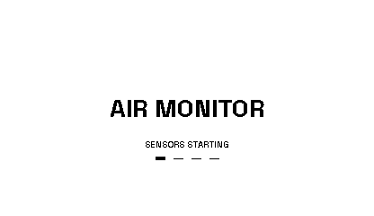
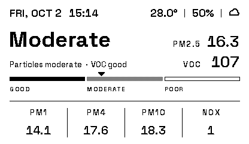
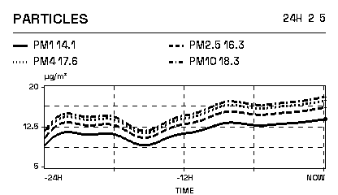
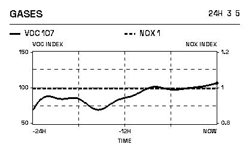
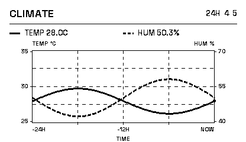
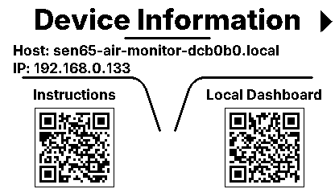
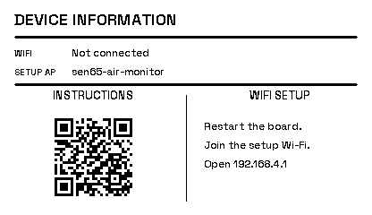
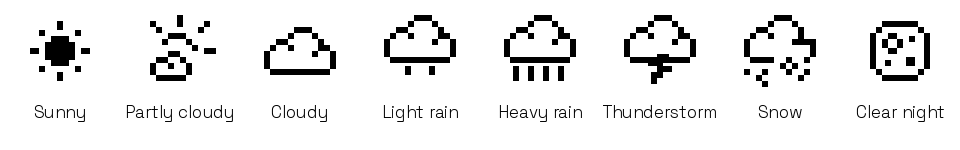

SEN65 Air Monitor – Display Layouts
Original firmware rendering at 416 × 240 pixels. The overview was captured from the device; the graphs show sample histories. Connection details are anonymized for this public preview.
Graph layouts from v0.3.5: three-pixel lines, numeric value scales and a labeled time axis. Particles share a µg/m³ scale; gases and climate use separate left/right scales. Equal heights on different axes do not mean equal values.








Weather location is selectable in the device dashboard and saved across restarts. Rain, cloud and snow icons remain visible at night; only clear nights show a moon. See the weather settings guide.